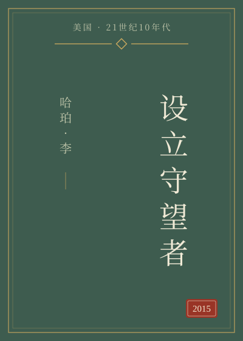
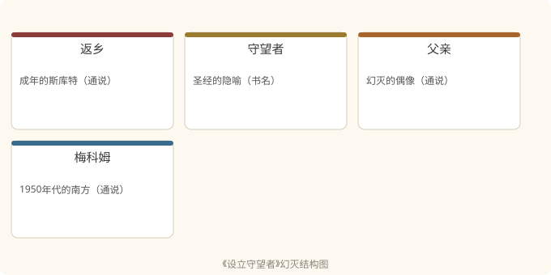

设立守望者
一、基本信息
| 作者 | 哈珀·李 |
|---|---|
| 成书/出版 | 2015年（作者页注记：Britannica——设立守望者（2015）） Harper Lee — Encyclopaedia Britannica（百科全书） |
| 国别/地区 | 美国 |
| 时代 | 现当代 · 21世纪10年代 |
| 体裁 | 长篇小说 |
| 语言 | 英语 |

《设立守望者》幻灭结构图（主题·结构图）
二、创作背景
作者页注记：设立守望者——'（Britannica）'。
Britannica：哈珀·李——《杀死一只知更鸟》作者（作者页交叉）。
题材（通说待核）：《知更鸟》二十年后的琼·露易丝返乡——种族立场的幻灭。
三、内容脉络
（通说待核）斯库特（琼·露易丝）从纽约回梅科姆。
（通说待核）父亲阿蒂克斯的'另一面'。
四、主要人物表
| 人物 | 身份 | 说明 |
|---|---|---|
| 琼·露易丝 | 成年斯库特 | （通说待核） |
| 阿蒂克斯 | 父亲 | （通说待核） |
五、主题与艺术特点
- '知更鸟'前传还是续章的争议（通说待核）。
- 成年后对父亲的幻灭（通说待核）。
- 2015年的出版风波（作者页语境——待核）。
六、影响与评论
- Britannica：Go Set a Watchman (2015)（作者页注记）。
Harper Lee — Encyclopaedia Britannica（百科全书） - Britannica：《杀死一只知更鸟》为代表作（作者页交叉）。
Harper Lee — Encyclopaedia Britannica（百科全书）
七、阅读建议
难点
- 与《知更鸟》的关系定位。
- 1950年代南方种族语境。
- 《设立守望者》中译名（《守望之心》）待核。
- 英文原版。
《知更鸟》续读（或前稿）；需注意其立场差异。
八、待核实
- 2015年出版（Harper说）与'发现手稿'风波待核。
- 琼·露易丝人名核对（通说）。
- '前稿/续篇'的争议待核。